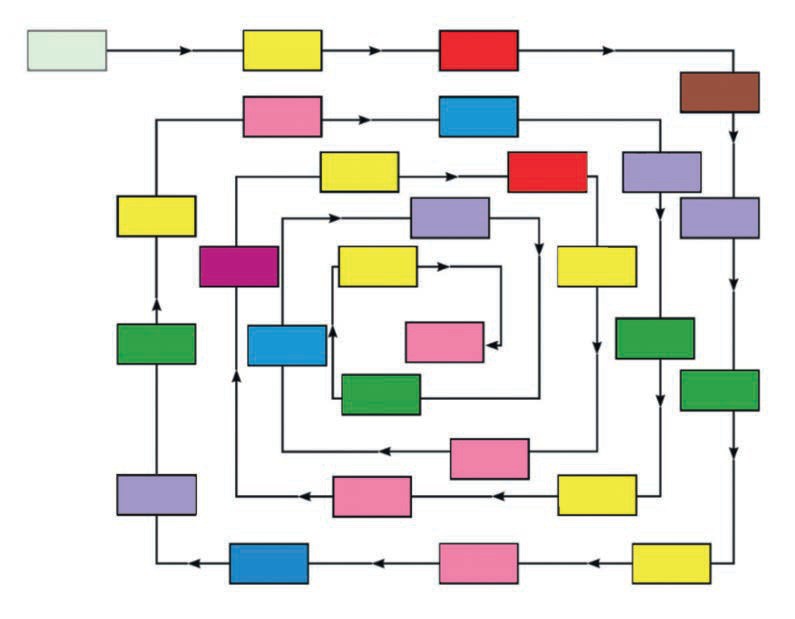

Shughuli ya tatu
Soma namba zilizopo kwenye mchoro kwa kufuata mshale kisha jibu maswali yanayofuata.

Maswali
1.Soma kwa sauti mamoja ya namba kumi za mwanzo.
2.Soma kwa sauti mamia ya namba tano kabla ya 999.
3.Soma kwa sauti namba zinazoishia na mamoja 0.
4.Soma kwa sauti namba zenye makumi 0.
101109207210500535498768822564290743900963831476890999572947300399688849602360320304Kuhesabu Std 2 SEPT 2024.indd 3007/11/2024 08:44